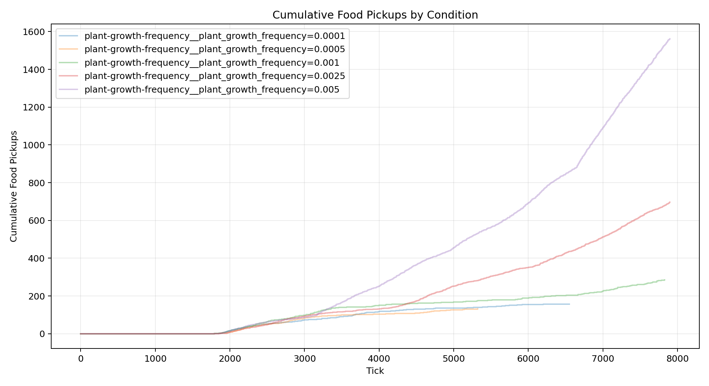
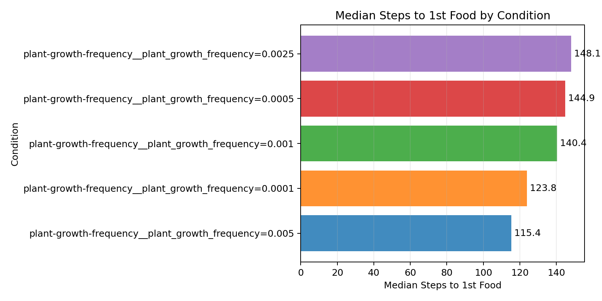
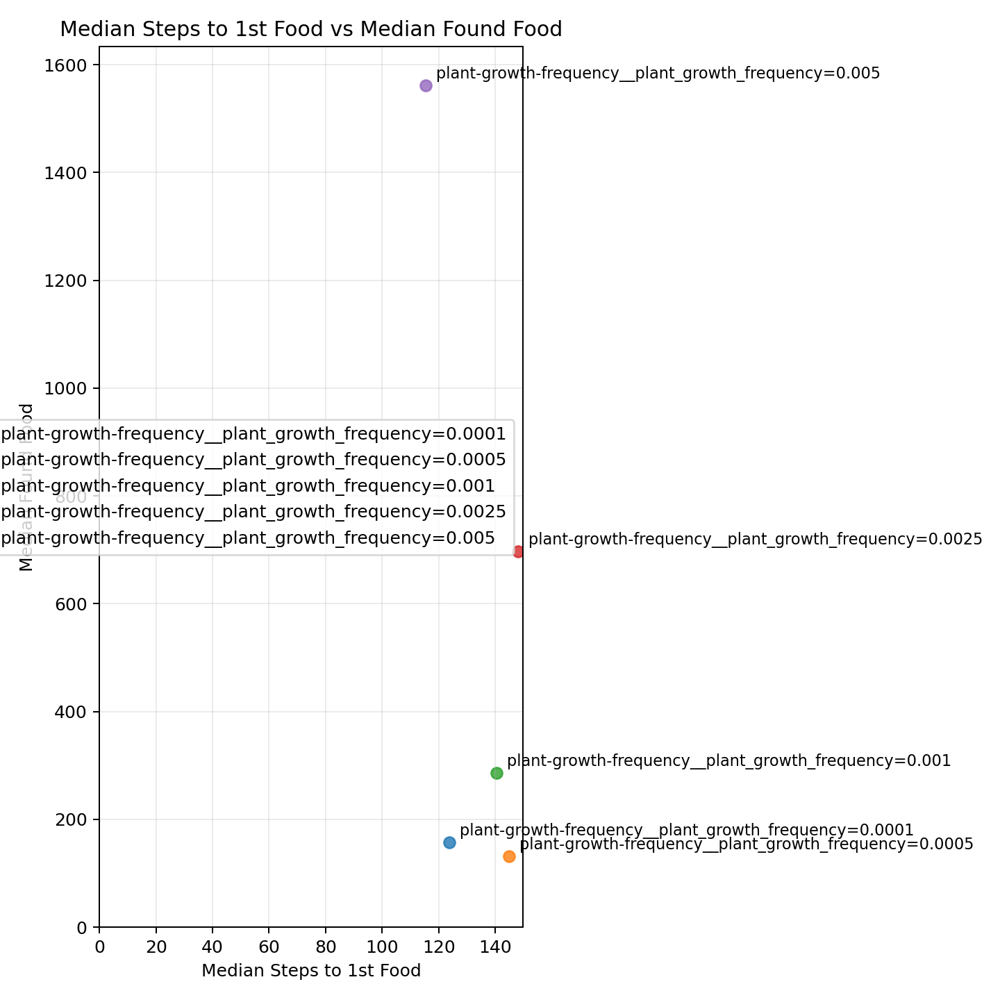
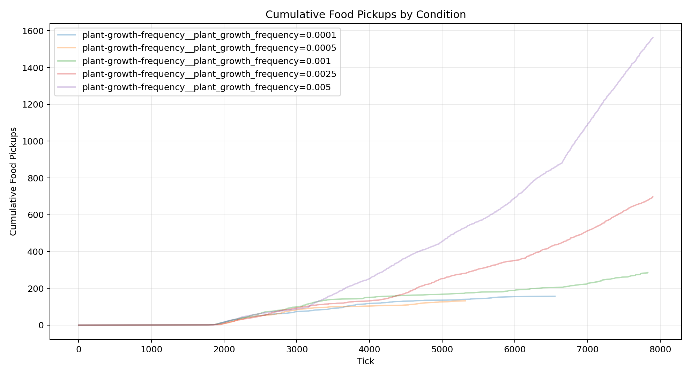
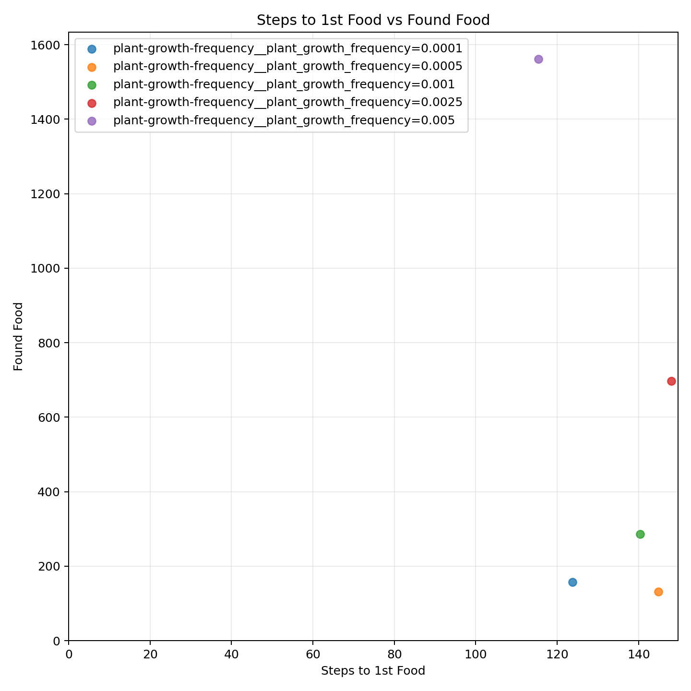
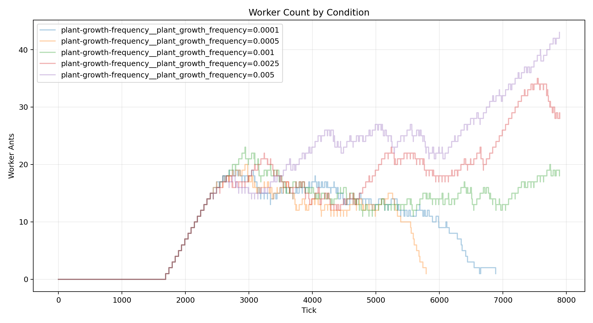

| Metric | Conditions | Min | Max | Average | Median | Mode |
|---|---|---|---|---|---|---|
| analysis.delivered_food | 5 | 123 | 1534 | 548.400 | 264 | none |
| analysis.delivered_food_per_day | 5 | 2.027 | 19.175 | 7.000 | 3.300 | none |
| analysis.final_day | 5 | 59 | 80 | 74.400 | 80 | 80 |
| analysis.final_tick | 5 | 5850 | 7900 | 7360.200 | 7900 | 7900 |
| analysis.found_food | 5 | 132 | 1562 | 566.800 | 286 | none |
| analysis.selected_move_count | 5 | 49279 | 139541 | 90078.200 | 87281 | none |
| analysis.simulation_length | 5 | 4166 | 6216 | 5676.200 | 6216 | 6216 |
| analysis.steps_to_nth_food.1 | 5 | 115.352 | 148.068 | 134.496 | 140.366 | none |
| analysis.steps_to_nth_food.10 | 5 | 17 | 90.286 | 56.586 | 60 | none |
| analysis.steps_to_nth_food.11 | 5 | 23 | 77.636 | 40.708 | 30.604 | none |
| analysis.steps_to_nth_food.12 | 5 | 29 | 108 | 57.825 | 43.400 | none |
| analysis.steps_to_nth_food.13 | 5 | 20 | 46.850 | 31.260 | 28.200 | none |
| analysis.steps_to_nth_food.14 | 4 | 21 | 148.333 | 60.596 | 36.524 | none |
| analysis.steps_to_nth_food.15 | 4 | 16 | 153 | 68.449 | 52.397 | none |
| analysis.steps_to_nth_food.16 | 4 | 17 | 120 | 50.413 | 32.326 | none |
| analysis.steps_to_nth_food.17 | 2 | 35.757 | 78.500 | 57.128 | 57.128 | none |
| analysis.steps_to_nth_food.18 | 2 | 33.970 | 47.571 | 40.771 | 40.771 | none |
| analysis.steps_to_nth_food.19 | 2 | 31.273 | 38.286 | 34.779 | 34.779 | none |
| analysis.steps_to_nth_food.2 | 5 | 33.091 | 60.019 | 51.570 | 54.875 | none |
| analysis.steps_to_nth_food.20 | 2 | 32.806 | 37.600 | 35.203 | 35.203 | none |
| analysis.steps_to_nth_food.21 | 2 | 27 | 31.250 | 29.125 | 29.125 | none |
| analysis.steps_to_nth_food.22 | 2 | 26.208 | 37.400 | 31.804 | 31.804 | none |
| analysis.steps_to_nth_food.23 | 2 | 41.800 | 49.955 | 45.877 | 45.877 | none |
| analysis.steps_to_nth_food.24 | 2 | 35.048 | 44.400 | 39.724 | 39.724 | none |
| analysis.steps_to_nth_food.25 | 2 | 29.421 | 53.800 | 41.611 | 41.611 | none |
| analysis.steps_to_nth_food.26 | 2 | 28.176 | 35 | 31.588 | 31.588 | none |
| analysis.steps_to_nth_food.27 | 2 | 21.647 | 29 | 25.324 | 25.324 | none |
| analysis.steps_to_nth_food.28 | 2 | 20.882 | 58.400 | 39.641 | 39.641 | none |
| analysis.steps_to_nth_food.29 | 2 | 22.294 | 59.200 | 40.747 | 40.747 | none |
| analysis.steps_to_nth_food.3 | 5 | 32.429 | 64.818 | 52.281 | 58.817 | none |
| analysis.steps_to_nth_food.30 | 2 | 30.412 | 48.800 | 39.606 | 39.606 | none |
| analysis.steps_to_nth_food.31 | 2 | 35.562 | 52 | 43.781 | 43.781 | none |
| analysis.steps_to_nth_food.32 | 2 | 31.625 | 46 | 38.812 | 38.812 | none |
| analysis.steps_to_nth_food.33 | 2 | 31.333 | 109.750 | 70.542 | 70.542 | none |
| analysis.steps_to_nth_food.34 | 2 | 33.500 | 80.250 | 56.875 | 56.875 | none |
| analysis.steps_to_nth_food.35 | 2 | 23 | 61 | 42 | 42 | none |
| analysis.steps_to_nth_food.36 | 2 | 25.364 | 47.667 | 36.515 | 36.515 | none |
| analysis.steps_to_nth_food.37 | 2 | 30.545 | 39.333 | 34.939 | 34.939 | none |
| analysis.steps_to_nth_food.38 | 2 | 38.111 | 67 | 52.556 | 52.556 | none |
| analysis.steps_to_nth_food.39 | 2 | 38.889 | 50 | 44.444 | 44.444 | none |
| analysis.steps_to_nth_food.4 | 5 | 30.298 | 56.635 | 43.180 | 41.182 | none |
| analysis.steps_to_nth_food.40 | 2 | 38.250 | 132.333 | 85.292 | 85.292 | none |
| analysis.steps_to_nth_food.41 | 2 | 30.429 | 39.500 | 34.964 | 34.964 | none |
| analysis.steps_to_nth_food.42 | 2 | 29 | 34.333 | 31.667 | 31.667 | none |
| analysis.steps_to_nth_food.43 | 2 | 26.833 | 30 | 28.417 | 28.417 | none |
| analysis.steps_to_nth_food.44 | 2 | 18 | 28.333 | 23.167 | 23.167 | none |
| analysis.steps_to_nth_food.45 | 2 | 28 | 32.600 | 30.300 | 30.300 | none |
| analysis.steps_to_nth_food.46 | 2 | 24 | 25.400 | 24.700 | 24.700 | none |
| analysis.steps_to_nth_food.47 | 2 | 25 | 35.750 | 30.375 | 30.375 | none |
| analysis.steps_to_nth_food.48 | 1 | 31 | 31 | 31 | 31 | none |
| analysis.steps_to_nth_food.49 | 1 | 27.500 | 27.500 | 27.500 | 27.500 | none |
| analysis.steps_to_nth_food.5 | 5 | 36.200 | 49.850 | 44.862 | 46.300 | none |
| analysis.steps_to_nth_food.50 | 1 | 15.750 | 15.750 | 15.750 | 15.750 | none |
| analysis.steps_to_nth_food.51 | 1 | 25.667 | 25.667 | 25.667 | 25.667 | none |
| analysis.steps_to_nth_food.52 | 1 | 43.333 | 43.333 | 43.333 | 43.333 | none |
| analysis.steps_to_nth_food.53 | 1 | 29.333 | 29.333 | 29.333 | 29.333 | none |
| analysis.steps_to_nth_food.54 | 1 | 30 | 30 | 30 | 30 | none |
| analysis.steps_to_nth_food.55 | 1 | 15.500 | 15.500 | 15.500 | 15.500 | none |
| analysis.steps_to_nth_food.56 | 1 | 33.500 | 33.500 | 33.500 | 33.500 | none |
| analysis.steps_to_nth_food.57 | 1 | 20 | 20 | 20 | 20 | none |
| analysis.steps_to_nth_food.58 | 1 | 30 | 30 | 30 | 30 | none |
| analysis.steps_to_nth_food.59 | 1 | 41.500 | 41.500 | 41.500 | 41.500 | none |
| analysis.steps_to_nth_food.6 | 5 | 44.652 | 83 | 61.155 | 59.244 | none |
| analysis.steps_to_nth_food.60 | 1 | 33.500 | 33.500 | 33.500 | 33.500 | none |
| analysis.steps_to_nth_food.61 | 1 | 28.500 | 28.500 | 28.500 | 28.500 | none |
| analysis.steps_to_nth_food.62 | 1 | 34.500 | 34.500 | 34.500 | 34.500 | none |
| analysis.steps_to_nth_food.63 | 1 | 15.500 | 15.500 | 15.500 | 15.500 | none |
| analysis.steps_to_nth_food.64 | 1 | 27.500 | 27.500 | 27.500 | 27.500 | none |
| analysis.steps_to_nth_food.65 | 1 | 21 | 21 | 21 | 21 | none |
| analysis.steps_to_nth_food.66 | 1 | 29.500 | 29.500 | 29.500 | 29.500 | none |
| analysis.steps_to_nth_food.67 | 1 | 21 | 21 | 21 | 21 | none |
| analysis.steps_to_nth_food.68 | 1 | 21 | 21 | 21 | 21 | none |
| analysis.steps_to_nth_food.69 | 1 | 20 | 20 | 20 | 20 | none |
| analysis.steps_to_nth_food.7 | 5 | 42.833 | 62.583 | 52.361 | 52 | none |
| analysis.steps_to_nth_food.70 | 1 | 31 | 31 | 31 | 31 | none |
| analysis.steps_to_nth_food.71 | 1 | 11 | 11 | 11 | 11 | none |
| analysis.steps_to_nth_food.72 | 1 | 34 | 34 | 34 | 34 | none |
| analysis.steps_to_nth_food.73 | 1 | 32 | 32 | 32 | 32 | none |
| analysis.steps_to_nth_food.74 | 1 | 33 | 33 | 33 | 33 | none |
| analysis.steps_to_nth_food.75 | 1 | 25 | 25 | 25 | 25 | none |
| analysis.steps_to_nth_food.76 | 1 | 39 | 39 | 39 | 39 | none |
| analysis.steps_to_nth_food.77 | 1 | 49 | 49 | 49 | 49 | none |
| analysis.steps_to_nth_food.78 | 1 | 31 | 31 | 31 | 31 | none |
| analysis.steps_to_nth_food.8 | 5 | 23.667 | 59.267 | 37.688 | 33.441 | none |
| analysis.steps_to_nth_food.9 | 5 | 21.500 | 62.400 | 48.025 | 50.714 | none |
| analysis.steps_to_nth_queen.1 | 5 | 19.221 | 58.789 | 45.231 | 52.311 | none |
| analysis.steps_to_nth_queen.10 | 5 | 18 | 47.348 | 30.056 | 29.500 | none |
| analysis.steps_to_nth_queen.11 | 5 | 20 | 36.095 | 30.092 | 34.600 | none |
| analysis.steps_to_nth_queen.12 | 5 | 16 | 41.500 | 29.238 | 24 | none |
| analysis.steps_to_nth_queen.13 | 5 | 18 | 34.158 | 24.436 | 23.750 | none |
| analysis.steps_to_nth_queen.14 | 4 | 17 | 130.667 | 50.486 | 27.139 | none |
| analysis.steps_to_nth_queen.15 | 4 | 18 | 34 | 27.013 | 28.026 | none |
| analysis.steps_to_nth_queen.16 | 4 | 19 | 35 | 24.904 | 22.807 | none |
| analysis.steps_to_nth_queen.17 | 2 | 25.500 | 26.029 | 25.764 | 25.764 | none |
| analysis.steps_to_nth_queen.18 | 2 | 24.143 | 28.606 | 26.374 | 26.374 | none |
| analysis.steps_to_nth_queen.19 | 2 | 26.500 | 37.406 | 31.953 | 31.953 | none |
| analysis.steps_to_nth_queen.2 | 5 | 24.333 | 46.500 | 36.108 | 34.526 | none |
| analysis.steps_to_nth_queen.20 | 2 | 34.600 | 34.933 | 34.767 | 34.767 | none |
| analysis.steps_to_nth_queen.21 | 2 | 21.400 | 25.593 | 23.496 | 23.496 | none |
| analysis.steps_to_nth_queen.22 | 2 | 22.875 | 77 | 49.938 | 49.938 | none |
| analysis.steps_to_nth_queen.23 | 2 | 24.636 | 45 | 34.818 | 34.818 | none |
| analysis.steps_to_nth_queen.24 | 2 | 31.750 | 37.200 | 34.475 | 34.475 | none |
| analysis.steps_to_nth_queen.25 | 2 | 24.947 | 37.600 | 31.274 | 31.274 | none |
| analysis.steps_to_nth_queen.26 | 2 | 27.471 | 28.600 | 28.035 | 28.035 | none |
| analysis.steps_to_nth_queen.27 | 2 | 22.353 | 26.600 | 24.476 | 24.476 | none |
| analysis.steps_to_nth_queen.28 | 2 | 21.647 | 37 | 29.324 | 29.324 | none |
| analysis.steps_to_nth_queen.29 | 2 | 22.235 | 57.600 | 39.918 | 39.918 | none |
| analysis.steps_to_nth_queen.3 | 5 | 24.326 | 48.667 | 34.907 | 33.062 | none |
| analysis.steps_to_nth_queen.30 | 2 | 24.375 | 45.400 | 34.888 | 34.888 | none |
| analysis.steps_to_nth_queen.31 | 2 | 46.600 | 56 | 51.300 | 51.300 | none |
| analysis.steps_to_nth_queen.32 | 2 | 38 | 40.733 | 39.367 | 39.367 | none |
| analysis.steps_to_nth_queen.33 | 2 | 50.250 | 52.714 | 51.482 | 51.482 | none |
| analysis.steps_to_nth_queen.34 | 2 | 25.917 | 63.667 | 44.792 | 44.792 | none |
| analysis.steps_to_nth_queen.35 | 2 | 21.545 | 63.333 | 42.439 | 42.439 | none |
| analysis.steps_to_nth_queen.36 | 2 | 27 | 47.333 | 37.167 | 37.167 | none |
| analysis.steps_to_nth_queen.37 | 2 | 22.900 | 34 | 28.450 | 28.450 | none |
| analysis.steps_to_nth_queen.38 | 2 | 24.556 | 67 | 45.778 | 45.778 | none |
| analysis.steps_to_nth_queen.39 | 2 | 28.778 | 51.333 | 40.056 | 40.056 | none |
| analysis.steps_to_nth_queen.4 | 5 | 24.500 | 39.909 | 31.141 | 30.212 | none |
| analysis.steps_to_nth_queen.40 | 2 | 26 | 108.667 | 67.333 | 67.333 | none |
| analysis.steps_to_nth_queen.41 | 2 | 19 | 27.571 | 23.286 | 23.286 | none |
| analysis.steps_to_nth_queen.42 | 2 | 28.333 | 30 | 29.167 | 29.167 | none |
| analysis.steps_to_nth_queen.43 | 2 | 18.167 | 28 | 23.083 | 23.083 | none |
| analysis.steps_to_nth_queen.44 | 2 | 17.800 | 24 | 20.900 | 20.900 | none |
| analysis.steps_to_nth_queen.45 | 2 | 22.200 | 26 | 24.100 | 24.100 | none |
| analysis.steps_to_nth_queen.46 | 2 | 18 | 21.400 | 19.700 | 19.700 | none |
| analysis.steps_to_nth_queen.47 | 1 | 62.500 | 62.500 | 62.500 | 62.500 | none |
| analysis.steps_to_nth_queen.48 | 1 | 25.750 | 25.750 | 25.750 | 25.750 | none |
| analysis.steps_to_nth_queen.49 | 1 | 22.750 | 22.750 | 22.750 | 22.750 | none |
| analysis.steps_to_nth_queen.5 | 5 | 26.875 | 40.111 | 33.004 | 30.935 | none |
| analysis.steps_to_nth_queen.50 | 1 | 13.750 | 13.750 | 13.750 | 13.750 | none |
| analysis.steps_to_nth_queen.51 | 1 | 24.333 | 24.333 | 24.333 | 24.333 | none |
| analysis.steps_to_nth_queen.52 | 1 | 40.333 | 40.333 | 40.333 | 40.333 | none |
| analysis.steps_to_nth_queen.53 | 1 | 24 | 24 | 24 | 24 | none |
| analysis.steps_to_nth_queen.54 | 1 | 27 | 27 | 27 | 27 | none |
| analysis.steps_to_nth_queen.55 | 1 | 17.500 | 17.500 | 17.500 | 17.500 | none |
| analysis.steps_to_nth_queen.56 | 1 | 28.500 | 28.500 | 28.500 | 28.500 | none |
| analysis.steps_to_nth_queen.57 | 1 | 19 | 19 | 19 | 19 | none |
| analysis.steps_to_nth_queen.58 | 1 | 31 | 31 | 31 | 31 | none |
| analysis.steps_to_nth_queen.59 | 1 | 28.500 | 28.500 | 28.500 | 28.500 | none |
| analysis.steps_to_nth_queen.6 | 5 | 25.725 | 56.250 | 33.841 | 29.263 | none |
| analysis.steps_to_nth_queen.60 | 1 | 33.500 | 33.500 | 33.500 | 33.500 | none |
| analysis.steps_to_nth_queen.61 | 1 | 30.500 | 30.500 | 30.500 | 30.500 | none |
| analysis.steps_to_nth_queen.62 | 1 | 30.500 | 30.500 | 30.500 | 30.500 | none |
| analysis.steps_to_nth_queen.63 | 1 | 16.500 | 16.500 | 16.500 | 16.500 | none |
| analysis.steps_to_nth_queen.64 | 1 | 22.500 | 22.500 | 22.500 | 22.500 | none |
| analysis.steps_to_nth_queen.65 | 1 | 20 | 20 | 20 | 20 | none |
| analysis.steps_to_nth_queen.66 | 1 | 33.500 | 33.500 | 33.500 | 33.500 | none |
| analysis.steps_to_nth_queen.67 | 1 | 19 | 19 | 19 | 19 | none |
| analysis.steps_to_nth_queen.68 | 1 | 17 | 17 | 17 | 17 | none |
| analysis.steps_to_nth_queen.69 | 1 | 24 | 24 | 24 | 24 | none |
| analysis.steps_to_nth_queen.7 | 5 | 24.727 | 40.500 | 31.488 | 30.500 | none |
| analysis.steps_to_nth_queen.70 | 1 | 31 | 31 | 31 | 31 | none |
| analysis.steps_to_nth_queen.71 | 1 | 13 | 13 | 13 | 13 | none |
| analysis.steps_to_nth_queen.72 | 1 | 38 | 38 | 38 | 38 | none |
| analysis.steps_to_nth_queen.73 | 1 | 28 | 28 | 28 | 28 | none |
| analysis.steps_to_nth_queen.74 | 1 | 37 | 37 | 37 | 37 | none |
| analysis.steps_to_nth_queen.75 | 1 | 27 | 27 | 27 | 27 | none |
| analysis.steps_to_nth_queen.76 | 1 | 31 | 31 | 31 | 31 | none |
| analysis.steps_to_nth_queen.77 | 1 | 37 | 37 | 37 | 37 | none |
| analysis.steps_to_nth_queen.78 | 1 | 31 | 31 | 31 | 31 | none |
| analysis.steps_to_nth_queen.8 | 5 | 20.333 | 30.900 | 24.636 | 22.034 | none |
| analysis.steps_to_nth_queen.9 | 5 | 20 | 101 | 44.997 | 33 | none |
| day | 5 | 59 | 80 | 74.400 | 80 | 80 |
| delivered_food | 5 | 123 | 1534 | 548.400 | 264 | none |
| egg_hatched | 5 | 71 | 125 | 106 | 125 | 125 |
| egg_laid | 5 | 71 | 147 | 115.200 | 132 | none |
| eggs | 5 | 0 | 22 | 9.200 | 7 | 0 |
| found_food | 5 | 132 | 1562 | 566.800 | 286 | none |
| players | 5 | 0 | 0 | 0 | 0 | 0 |
| queens | 5 | 1 | 1 | 1 | 1 | 1 |
| randomized_seed | 5 | 1777321970823 | 1777322344111 | 1777322177033.800 | 1777322193735 | none |
| simulation_length | 5 | 4166 | 6216 | 5676.200 | 6216 | 6216 |
| start_tick | 5 | 1684 | 1684 | 1684 | 1684 | 1684 |
| stop_reason.MaxDay | 3 | 80 | 80 | 80 | 80 | 80 |
| tick | 5 | 5850 | 7900 | 7360.200 | 7900 | 7900 |
| workers | 5 | 0 | 43 | 18 | 19 | 0 |
| world.height | 5 | 274 | 274 | 274 | 274 | 274 |
| world.width | 5 | 160 | 160 | 160 | 160 | 160 |





